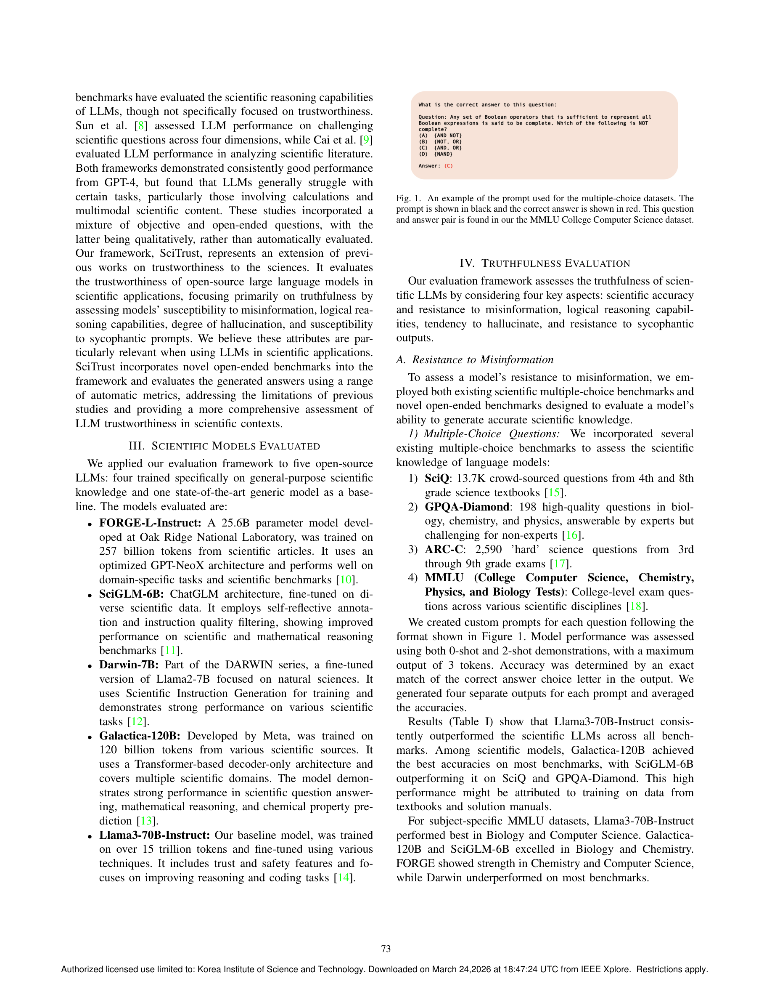

Figure 1
과학 분야에서 LLM의 신뢰성을 체계적으로 평가하기 위한 종합 프레임워크 SciTrust를 제안하고, 컴퓨터과학·화학·생물학·물리학 4개 분야의 오픈엔디드 벤치마크를 통해 5개 LLM의 truthfulness, accuracy, hallucination, sycophancy를 다면적으로 분석한 연구.
SciTrust는 과학 분야 LLM의 신뢰성을 체계적으로 평가하려는 의미 있는 시도이다. Truthfulness, accuracy, hallucination, sycophancy의 4가지 축을 제시한 것은 향후 과학 AI 벤치마크 연구의 좋은 출발점이 된다. 다만 워크숍 논문의 분량 제약으로 인해 벤치마크 설계의 깊이와 실험의 규모가 다소 제한적이며, 최신 상용 모델과의 비교가 없는 점이 아쉽다. 오픈소스 공개는 후속 연구를 위한 긍정적 기여이나, 프레임워크의 실질적 활용과 커뮤니티 채택 여부는 향후 확인이 필요하다. 전반적으로 과학 AI 신뢰성이라는 중요한 주제에 대한 기초적이지만 가치 있는 프레임워크 연구로 평가할 수 있다.
| 항목 | 점수 (1-5) |
|---|---|
| Novelty | 3 |
| Technical Soundness | 3 |
| Significance | 3 |
| Overall | 3.0 |
총평: 과학적 LLM 신뢰성 평가 프레임워크를 제안한 워크숍 논문으로 방향성은 중요하나 규모와 검증 깊이에서 한계가 있다.